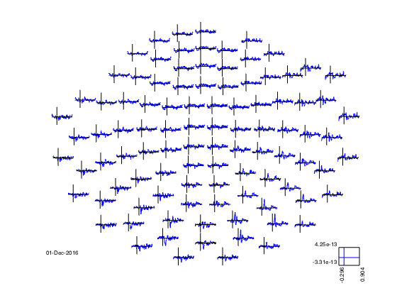
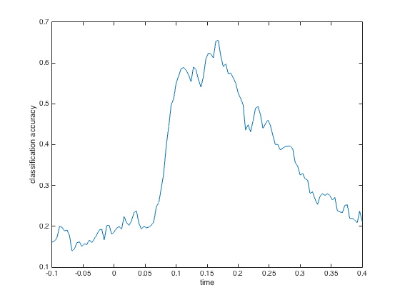
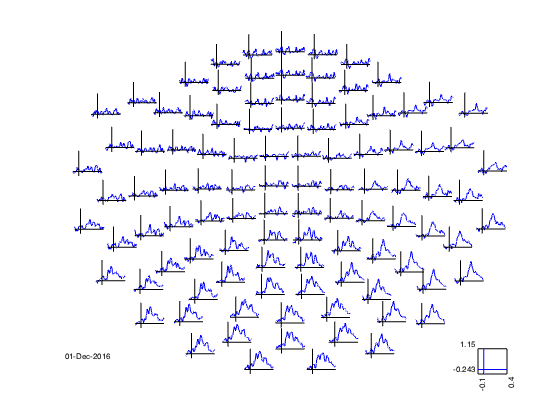
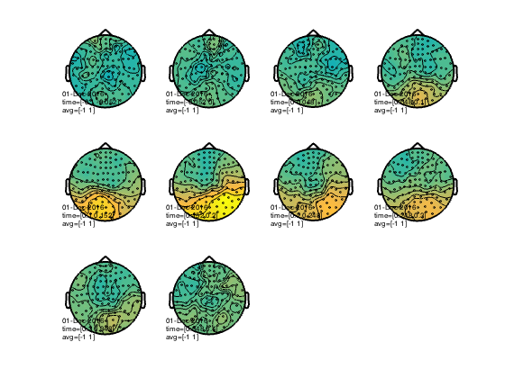

MEEG time-lock searchlight
This example shows MVPA analyses performed on MEEG data.
The input dataset involved a paradigm where a participant saw images of six object categories.
The code presented here can be adapted for other MEEG analyses, but there are a few potential caveats: * assignment of chunks (parts of the data that are assumed to be independent) is based on a trial-by-trial basis. For cross-validation, the number of chunks is reduced to two to speed up the analysis. * the current examples do not perform baseline corrections or signal normalizations, which may reduce discriminatory power.
Note: running this code requires FieldTrip.
- For CoSMoMVPA's copyright information and license terms, #
- see the COPYING file distributed with CoSMoMVPA. #
Contents
get timelock data in CoSMoMVPA format
% set configuration config=cosmo_config(); data_path=fullfile(config.tutorial_data_path,'meg_obj6'); % show dataset information readme_fn=fullfile(data_path,'README'); cosmo_type(readme_fn); % reset citation list cosmo_check_external('-tic'); % load preprocessed data data_fn=fullfile(data_path,'meg_obj6_s00.mat'); data_tl=load(data_fn); % Show data_tl % >@@> cosmo_disp(data_tl); % <@@<
******************************************************************************
MEG responses to a human participant viewing pictures of six object categories
******************************************************************************
Contents
--------
- meg_obj6_s00.mat
Preprecessed data from four runs in Matlab / GNU Octave format.
Data is stored in a FieldTrip structure with the following relevant
fields:
+ .trial
n_samples * n_sensors * n_time array with single trial data
+ .time
1 * n_time vector of time relative to stimulus onset.
+ .label
1 * n_sensors cell array with MEG channel labels.
+ .trialinfo
n_time * 6 matrix with trial information; the columns represent:
1) stimulus category in the range `(1:6)`, with the order
being 'body','car','face','flower','insect','scene'.
2) stimulus index in the range `(1:48)`.
3) unused.
4) cumulative number of catch trials in the current run.
5) stimulus presentation duration (in miliseconds).
6) run number.
In the current release, n_samples=494, n_sensors=295, n_time=301.
Version
-------
version 0.1, 26 April 2016
Methods
-------
This dataset contains data from an experiment where a participant
(32y right-handed male) viewed images of six categories while being measured
with MEG. Over four runs, trials were presented at a rate of 1Hz while the
participant performed a one-back task. Blocks of eight trials where separated
by blink periods to reduce eye movement artefaces.
Data was preprocessed using the FieldTrip toolbox [OFMS11].
Data was bandpass-filtered between 1Hz and 40Hz, resampled from 1000Hz to
250Hz, and baseline period for the period of -250 to -50 ms relative to (i.e.
before) stimulus onset.
Based on visual inspection, trials and sensors that seemed noisy were removed.
Catch trials (trials were the stimulus was repeated relative to the previous
trial) were also removed.
License
-------
The contents are made available by Nikolaas N. Oosterhof <nikolaas.oosterhof
|at| unitn.it> under the Creative Commons CC0 1.0 Universal Public Domain
Dedication ("CC0"). See the LICENSE file for details, or visit
http://creativecommons.org/publicdomain/zero/1.0/deed.en.
Download
--------
A zip file with all data is available from the CoSMoMVPA_ website [OCH16]:
http://www.cosmomvpa.org/datadb-meg_obj6.zip
.. _CoSMoMVPA: http://www.cosmomvpa.org
Contact
-------
Nikolaas N. Oosterhof <nikolaas.oosterhof |at| unitn.it>
References
----------
:ref:`Oostenveld, R., Fries, P., Maris, E., and Schoffelen, J.-M. (2011) <OFMS11>` FieldTrip: Open source software for advanced analysis of MEG, EEG, and invasive electrophysiological data.. Computational Intelligence and Neuroscience, 2011:156869.
:ref:`Oosterhof, N. N., Connolly, A. C., and Haxby, J. V. (2016) <OCH16>`. CoSMoMVPA: multi-modal multivariate pattern analysis of neuroimaging data in Matlab / GNU Octave. biorxiv.org, 2016. doi:10.1101/047118.
.avg
[ 1.57e-13 2.83e-13 3.59e-13 ... 1.86e-13 2.99e-14 -9.54e-14
1.3e-13 1.17e-13 1.57e-13 ... 1.01e-13 -7.79e-14 -2.44e-13
3e-13 2.84e-13 3.21e-13 ... 2.1e-13 1.76e-13 5.76e-14
: : : : : :
-1.7e-13 -1.45e-13 -2.25e-13 ... -2.85e-13 -3.51e-13 -4.05e-13
3.47e-13 2.5e-13 1.98e-13 ... 2.63e-15 -1.2e-13 -3.68e-13
-1.18e-14 -1.5e-14 -1.55e-14 ... 4.1e-15 6.34e-15 9.04e-15 ]@295x301
.var
[ 3.7e-23 3.68e-23 3.53e-23 ... 3.06e-23 3.23e-23 3.2e-23
1.94e-23 1.99e-23 2.02e-23 ... 1.31e-23 1.31e-23 1.32e-23
2.12e-23 2.06e-23 2e-23 ... 2.08e-23 2.15e-23 2.23e-23
: : : : : :
2.14e-23 2.18e-23 2.27e-23 ... 2.14e-23 2.17e-23 2.33e-23
3.62e-23 3.8e-23 3.68e-23 ... 3.48e-23 3.27e-23 3.28e-23
8.86e-26 8.74e-26 8.49e-26 ... 8.09e-26 7.97e-26 7.91e-26 ]@295x301
.time
[ -0.296 -0.292 -0.288 ... 0.896 0.9 0.904 ]@1x301
.dof
[ 494 494 494 ... 494 494 494
494 494 494 ... 494 494 494
494 494 494 ... 494 494 494
: : : : : :
494 494 494 ... 494 494 494
494 494 494 ... 494 494 494
494 494 494 ... 494 494 494 ]@295x301
.label
{ 'MEG0113'
'MEG0112'
'MEG0123'
:
'MEG2642'
'MEG2643'
'MEG2641' }@295x1
.trial
<double>@494x295x301
(:,:,1) = [ -3.42e-12 1.32e-12 6.77e-12 ... -7.52e-13 -3.61e-12 2.06e-13
1.78e-12 1.42e-12 -2.35e-12 ... -5.65e-12 1.27e-11 1.48e-13
7.84e-12 1.71e-13 -6.44e-13 ... 7.08e-12 4.61e-12 1.45e-13
: : : : : :
-2.46e-12 -1.41e-16 2.27e-12 ... 3.94e-12 1.11e-12 -1.49e-13
-7.9e-12 4.2e-12 4.11e-12 ... -6.51e-12 5.64e-12 1.69e-13
-2.32e-13 -2.49e-12 7.39e-12 ... -4.17e-14 4.16e-12 2.23e-13 ]@494x295
(:,:,2) = [ -4.71e-12 -1.14e-13 6.4e-12 ... -2.31e-12 -1.31e-12 2.36e-13
3.29e-13 2.29e-12 -1.58e-12 ... -7.59e-12 1.21e-11 1.61e-13
4.95e-12 -1.93e-12 6.54e-13 ... 6.65e-12 4.87e-12 1.28e-13
: : : : : :
2.2e-13 -1.04e-12 -6.38e-14 ... 4.31e-12 1.35e-14 -2.23e-13
-6.59e-12 1.98e-12 3.95e-12 ... -6.81e-12 7.02e-12 1.7e-13
1.47e-12 -4.4e-12 4.12e-12 ... 5.68e-13 8.1e-16 8.56e-14 ]@494x295
(:,:,3) = [ -4.91e-12 -8.06e-13 6.51e-12 ... -2.31e-12 9.04e-13 2.02e-13
-2.54e-13 2.11e-12 -7.06e-14 ... -7.79e-12 6.7e-12 5.52e-14
5.23e-14 -3.46e-12 2.19e-12 ... 4.27e-12 5.39e-12 7.02e-14
: : : : : :
2.2e-12 -1.47e-12 -3.68e-12 ... 2.66e-12 -1.31e-12 -2.06e-13
-5.43e-12 4.94e-13 3.67e-12 ... -6.07e-12 4.98e-12 1.2e-13
1.5e-12 -6.54e-12 7.26e-13 ... 9.1e-13 -4.64e-12 1.08e-14 ]@494x295
: :
(:,:,299) = [ 6.21e-12 5.55e-13 3.17e-12 ... -5.9e-14 5.16e-12 4.83e-13
-6.51e-12 4.99e-13 5.83e-12 ... -5.88e-12 -1.05e-11 -9.06e-14
-2.5e-12 9.82e-13 3.51e-12 ... 2.18e-12 -1.08e-12 1.64e-14
: : : : : :
6.17e-12 3.21e-12 5.44e-12 ... -2.33e-12 6.82e-12 1.21e-13
1.7e-12 1.18e-12 -2.92e-13 ... -1.17e-11 6.53e-12 1.19e-16
7.27e-12 -3.62e-12 -1.97e-12 ... -1.76e-13 1.71e-12 -3.43e-15 ]@494x295
(:,:,300) = [ 1.29e-11 3.42e-12 2.89e-12 ... 2.43e-12 8.43e-12 7.99e-13
-6.53e-12 -2.33e-12 3.17e-12 ... -5.23e-12 -9.38e-12 -3.72e-14
-1.68e-12 6.17e-13 2.72e-12 ... 2.28e-13 7.02e-13 1.03e-13
: : : : : :
7.02e-12 4.53e-12 5.36e-12 ... -1.64e-12 -1.15e-12 2.73e-13
4.55e-12 1.99e-12 -4.22e-12 ... -7.83e-12 7.7e-12 1.26e-13
5.51e-12 -3.78e-12 -2.74e-12 ... 3.19e-13 -3.31e-12 2.01e-13 ]@494x295
(:,:,301) = [ 1.97e-11 6.19e-12 3.72e-12 ... 2.91e-12 1.02e-11 1e-12
-6.07e-12 -5.01e-12 -4.51e-13 ... -3.67e-12 -5.4e-12 7e-15
-5.07e-13 1.77e-12 3.3e-12 ... -2.88e-13 2.25e-12 1.2e-13
: : : : : :
6.38e-12 5.19e-12 3.13e-12 ... -5.81e-13 -6.2e-12 2.74e-13
7.23e-12 1.79e-12 -7.43e-12 ... -5.62e-12 7.64e-12 1.98e-13
3.53e-12 -3.41e-12 -3.94e-12 ... 2.08e-12 -8.5e-12 2.42e-13 ]@494x295
.dimord
'rpt_chan_time'
.grad
.balance
.current
'none'
.chanori
[ -0.974 0.226 0.00639
-0.974 0.226 0.00639
-0.974 0.226 0.00639
: : :
0.925 -0.379 -0.0148
0.925 -0.379 -0.0148
0.925 -0.379 -0.0148 ]@306x3
.chanpos
[ -10.6 4.54 -1.15
-10.6 4.54 -1.15
-10.6 4.54 -1.15
: : :
9.93 -4.43 2.42
9.93 -4.43 2.42
9.93 -4.43 2.42 ]@306x3
.chantype
{ 'megplanar'
'megplanar'
'megmag'
:
'megplanar'
'megplanar'
'megmag' }@306x1
.chanunit
{ 'T'
'T'
'T'
:
'T'
'T'
'T' }@306x1
.coilori
[ -0.974 0.226 0.00639
-0.974 0.226 0.00639
-0.974 0.226 0.00639
: : :
0.925 -0.379 -0.0148
0.925 -0.379 -0.0148
0.925 -0.379 -0.0148 ]@510x3
.coilpos
[ -10.6 4.56 -0.312
-10.6 4.51 -1.99
-10.4 5.35 -1.18
: : :
9.61 -5.2 2.45
10.2 -3.65 2.39
9.93 -4.43 2.42 ]@510x3
.coordsys
'neuromag'
.label
{ 'MEG0113'
'MEG0112'
'MEG0111'
:
'MEG2642'
'MEG2643'
'MEG2641' }@306x1
.tra
[ -1 1 0 ... 0 0 0
0 0 -1 ... 0 0 0
0 0 0 ... 0 0 0
: : : : : :
0 0 0 ... 0 0 0
0 0 0 ... -1 1 0
0 0 0 ... 0 0 1 ]@306x510
.type
'neuromag306'
.unit
'cm'
.trialinfo
[ 4 28 0 1 142 1
3 18 0 2 147 1
2 15 0 2 147 1
: : : : : :
6 47 0 23 142 4
4 28 0 24 146 4
3 18 0 24 147 4 ]@494x6
.cfg
.keeptrials
'yes'
.callinfo
.usercfg
.keeptrials
'yes'
.inputhash
{ '1f0c477 ... c8e4a55' }
.fieldtrip
'unknown'
.matlab
'8.1.0.604 (R2013a)'
.computer
'maci64'
.hostname
'nicks-MacBook-Pro-2'
.user
'nick'
.pwd
'/Users/ ... scripts'
.calltime
[ 2.02e+03 3 3 13 55 53.2 ]
.proctime
[ 1.91 ]
.procmem
[ 3.51e+08 ]
.outputhash
{ '390e69f ... facc363' }
.version
.name
'/Users/ ... lysis.m'
.id
'$Id$'
.trackconfig
'off'
.checkconfig
'loose'
.checksize
[ 1e+05 ]
.showcallinfo
'yes'
.debug
'no'
.trackcallinfo
'yes'
.trackdatainfo
'no'
.trackparaminfo
'no'
.trials
'all'
.channel
{ 'MEG0112'
'MEG0113'
'MEG0123'
:
'MEG2641'
'MEG2642'
'MEG2643' }@295x1
.covariance
'no'
.removemean
'yes'
.vartrllength
[ 0 ]
.feedback
'text'
.preproc
[ ]
.previous
.channel
{ 'MEG0112'
'MEG0113'
'MEG0123'
:
'MEG2641'
'MEG2642'
'MEG2643' }@295x1
.trials
[ 1 2 3 ... 729 730 733 ]@1x494
.callinfo
.usercfg
.channel
{ <char>@1x7
<char>@1x7
<char>@1x7
:
<char>@1x7
<char>@1x7
<char>@1x7 }@295x1
.trials
[ 1 2 3 ... 729 730 733 ]@1x494
.inputhash
{ }
.fieldtrip
'unknown'
.matlab
'8.1.0.604 (R2013a)'
.computer
'maci64'
.hostname
'nicks-MacBook-Pro-2'
.user
'nick'
.pwd
'/Users/ ... scripts'
.calltime
[ 2.02e+03 3 3 13 55 42.7 ]
.proctime
[ 0.571 ]
.procmem
[ 2.79e+08 ]
.outputhash
{ }
.version
.name
'/Users/ ... tdata.m'
.id
'unknown'
.trackconfig
'off'
.checkconfig
'loose'
.checksize
[ 1e+05 ]
.showcallinfo
'yes'
.debug
'no'
.trackcallinfo
'yes'
.trackdatainfo
'no'
.trackparaminfo
'no'
.tolerance
[ 1e-05 ]
.select
'intersect'
.latency
'all'
.frequency
'all'
.previous
.callinfo
.usercfg
struct (empty)
.inputhash
{ }
.fieldtrip
'unknown'
.matlab
'8.1.0.604 (R2013a)'
.computer
'maci64'
.hostname
'nicks-MacBook-Pro-2'
.user
'nick'
.pwd
'/Users/ ... scripts'
.calltime
[ 2.02e+03 3 3 13 55 40.5 ]
.proctime
[ 0.425 ]
.procmem
[ 2.21e+05 ]
.outputhash
{ }
.version
.name
'/Users/ ... ddata.m'
.id
'$Id$'
.trackconfig
'off'
.checkconfig
'loose'
.checksize
[ 1e+05 ]
.showcallinfo
'yes'
.debug
'no'
.trackcallinfo
'yes'
.trackdatainfo
'no'
.trackparaminfo
'no'
.previous
{ .trl .trl .trl .trl
<double>@164x8 <double>@209x8 <double>@186x8 <double>@174x8
.channel .channel .channel .channel
<cell> <cell> <cell> <cell>
.demean .demean .demean .demean
<char>@1x3 <char>@1x3 <char>@1x3 <char>@1x3
.baselinewindow .baselinewindow .baselinewindow .baselinewindow
<double>@1x2 <double>@1x2 <double>@1x2 <double>@1x2
.callinfo .callinfo .callinfo .callinfo
<struct> <struct> <struct> <struct>
.version .version .version .version
<struct> <struct> <struct> <struct>
.trackconfig .trackconfig .trackconfig .trackconfig
<char>@1x3 <char>@1x3 <char>@1x3 <char>@1x3
.checkconfig .checkconfig .checkconfig .checkconfig
<char>@1x5 <char>@1x5 <char>@1x5 <char>@1x5
.checksize .checksize .checksize .checksize
<double> <double> <double> <double>
.showcallinfo .showcallinfo .showcallinfo .showcallinfo
<char>@1x3 <char>@1x3 <char>@1x3 <char>@1x3
.debug .debug .debug .debug
<char>@1x2 <char>@1x2 <char>@1x2 <char>@1x2
.trackcallinfo .trackcallinfo .trackcallinfo .trackcallinfo
<char>@1x3 <char>@1x3 <char>@1x3 <char>@1x3
.trackdatainfo .trackdatainfo .trackdatainfo .trackdatainfo
<char>@1x2 <char>@1x2 <char>@1x2 <char>@1x2
.trackparaminfo .trackparaminfo .trackparaminfo .trackparaminfo
<char>@1x2 <char>@1x2 <char>@1x2 <char>@1x2
.offset .offset .offset .offset
<double>@0x0 (empty) <double>@0x0 (empty) <double>@0x0 (empty) <double>@0x0 (empty)
.toilim .toilim .toilim .toilim
<double>@0x0 (empty) <double>@0x0 (empty) <double>@0x0 (empty) <double>@0x0 (empty)
.begsample .begsample .begsample .begsample
<double>@0x0 (empty) <double>@0x0 (empty) <double>@0x0 (empty) <double>@0x0 (empty)
.endsample .endsample .endsample .endsample
<double>@0x0 (empty) <double>@0x0 (empty) <double>@0x0 (empty) <double>@0x0 (empty)
.minlength .minlength .minlength .minlength
<double>@0x0 (empty) <double>@0x0 (empty) <double>@0x0 (empty) <double>@0x0 (empty)
.trials .trials .trials .trials
<char>@1x3 <char>@1x3 <char>@1x3 <char>@1x3
.feedback .feedback .feedback .feedback
<char>@1x3 <char>@1x3 <char>@1x3 <char>@1x3
.length .length .length .length
<double>@0x0 (empty) <double>@0x0 (empty) <double>@0x0 (empty) <double>@0x0 (empty)
.overlap .overlap .overlap .overlap
<double> <double> <double> <double>
.previous .previous .previous .previous
<struct> <struct> <struct> <struct> }
% convert to cosmomvpa struct, using cosmo_meeg_dataset % >@@> ds=cosmo_meeg_dataset(data_tl); % <@@< % show the dataset % >@@> cosmo_disp(ds); % <@@<
.samples
[ -3.42e-12 1.32e-12 6.77e-12 ... 2.91e-12 1.02e-11 1e-12
1.78e-12 1.42e-12 -2.35e-12 ... -3.67e-12 -5.4e-12 7e-15
7.84e-12 1.71e-13 -6.44e-13 ... -2.88e-13 2.25e-12 1.2e-13
: : : : : :
-2.46e-12 -1.41e-16 2.27e-12 ... -5.81e-13 -6.2e-12 2.74e-13
-7.9e-12 4.2e-12 4.11e-12 ... -5.62e-12 7.64e-12 1.98e-13
-2.32e-13 -2.49e-12 7.39e-12 ... 2.08e-12 -8.5e-12 2.42e-13 ]@494x88795
.fa
.chan
[ 1 2 3 ... 293 294 295 ]@1x88795
.time
[ 1 1 1 ... 301 301 301 ]@1x88795
.a
.fdim
.labels
{ 'chan'
'time' }
.values
{ { 'MEG0113' 'MEG0112' 'MEG0123' ... 'MEG2642' 'MEG2643' 'MEG2641' }@1x295
[ -0.296 -0.292 -0.288 ... 0.896 0.9 0.904 ]@1x301 }
.meeg
.samples_field
'trial'
.sa
.trialinfo
[ 4 28 0 1 142 1
3 18 0 2 147 1
2 15 0 2 147 1
: : : : : :
6 47 0 23 142 4
4 28 0 24 146 4
3 18 0 24 147 4 ]@494x6
% set the target (trial condition) % Hint: use the first column from ds.sa.trialinfo ds.sa.targets=ds.sa.trialinfo(:,1); % 6 categories % set the chunks (independent measurements) % all trials are here considered to be independent nsamples=size(ds.samples,1); ds.sa.chunks=(1:nsamples)'; % in addition give a label to each trial index2label={'body','car','face','flower','insect','scene'}; ds.sa.labels=cellfun(@(x)index2label(x),num2cell(ds.sa.targets)); % just to check everything is ok cosmo_check_dataset(ds);
Count number of channels, time points and trials
>@@>
fprintf('There are %d channels, %d time points and %d trials\n',... numel(unique(ds.fa.chan)),numel(unique(ds.fa.time)),... size(ds.samples,1)); % <@@<
There are 295 channels, 301 time points and 494 trials
%%%%%%%%%%%%%%%%%%%%%%%%%%%%%%%%%%%%%%%%%%%%%%%%%%%%%%%%%%%%%%%%%%%%%%%%%%% % Part I: compute difference between faces and scenes %%%%%%%%%%%%%%%%%%%%%%%%%%%%%%%%%%%%%%%%%%%%%%%%%%%%%%%%%%%%%%%%%%%%%%%%%%% % For each time point and sensor; then visualize the results % for the magnetometer (meg_axial) sensors. % slice 'ds' twice to get 'ds_face' and 'ds_scene', each with only trials % from the face and scene categories % >@@> ds_face=cosmo_slice(ds,cosmo_match(ds.sa.labels,'face')); ds_scene=cosmo_slice(ds,cosmo_match(ds.sa.labels,'scene')); % <@@< % prepare dataset for output ds_faceVSscene=cosmo_slice(ds_face,1); ds_faceVSscene.sa=struct(); % destroy sample attributes % Compute difference between average of faces versus average of scenes; % store the result in the samples field of ds_faceVSscene % >@@> ds_faceVSscene.samples=mean(ds_face.samples)-mean(ds_scene.samples); % <@@< % Convert ds_faceVSscene to a fieldtrip structure and convert ft_faceVSscene=cosmo_map2meeg(ds_faceVSscene);
Use FieldTrip to visualize the face versus house contrast
chantype='meg_axial'; layout=cosmo_meeg_find_layout(ds_faceVSscene,'chantype',chantype); figure(); cfg=struct(); cfg.interactive='yes'; cfg.zlim=[-1 1]; cfg.layout=layout; % show figure with plots for each sensor ft_multiplotER(cfg, ft_faceVSscene);
the call to "ft_selectdata" took 0 seconds and required the additional allocation of an estimated 0 MB the call to "ft_prepare_layout" took 0 seconds and required the additional allocation of an estimated 0 MB the call to "ft_multiplotER" took 2 seconds and required the additional allocation of an estimated 2 MB
%%%%%%%%%%%%%%%%%%%%%%%%%%%%%%%%%%%%%%%%%%%%%%%%%%%%%%%%%%%%%%%%%%%%%%%%%%%
Part 2: run searchlight over time
%%%%%%%%%%%%%%%%%%%%%%%%%%%%%%%%%%%%%%%%%%%%%%%%%%%%%%%%%%%%%%%%%%%%%%%%%%% % set MVPA parameters fprintf('The input has feature dimensions %s\n', ... cosmo_strjoin(ds.a.fdim.labels,', ')); % only select relevant time period and sensors sensor_posterior_axial={'MEG1631', 'MEG1641', 'MEG1731', 'MEG1841', ... 'MEG1911', 'MEG1921', 'MEG1941', 'MEG2231', ... 'MEG2311', 'MEG2321', 'MEG2341', 'MEG2431', ... 'MEG2441', 'MEG2511', 'MEG2531'}; % define the mask msk=cosmo_dim_match(ds,'time',@(t) t>=-.1 & t<=.4,... 'chan',sensor_posterior_axial); % first slice the dataset, then use cosmo_dim_prune to avoid using % non-selected data % >@@> ds_sel=cosmo_slice(ds,msk,2); ds_sel=cosmo_dim_prune(ds_sel); % <@@< % make a copy of original chunks ds_sel.sa.orig_chunks=ds_sel.sa.chunks; % For speed, divide trials in a 4 chunks % (hint: use cosmo_chunkize) nchunks=4; % >@@> ds_sel.sa.chunks=cosmo_chunkize(ds_sel, nchunks); % <@@< % define the neighborhood for time with a time radius of 2 time points % Hint: use cosmo_interval_neighborhood % >@@> time_nbrhood=cosmo_interval_neighborhood(ds_sel,'time','radius',2); % <@@< % Define the measure to be cosmo_crossvalidation_measure % >@@> measure=@cosmo_crossvalidation_measure; % <@@< % Use n-fold partitioning and the LDA classifier % Hint: use cosmo_balance_partitions to deal with a different number of % trials within each chunk measure_args=struct(); measure_args.partitions=cosmo_nfold_partitioner(ds_sel); measure_args.partitions=cosmo_balance_partitions(... measure_args.partitions,ds_sel); measure_args.classifier=@cosmo_classify_lda; ds_sl=cosmo_searchlight(ds_sel,time_nbrhood,measure,measure_args); plot(ds_sl.a.fdim.values{1},ds_sl.samples) xlabel('time'); ylabel('classification accuracy');
The input has feature dimensions chan, time +00:00:01 [####################] -00:00:00
%%%%%%%%%%%%%%%%%%%%%%%%%%%%%%%%%%%%%%%%%%%%%%%%%%%%%%%%%%%%%%%%%%%%%%%%%%%
Part III: channel-time searchlight
%%%%%%%%%%%%%%%%%%%%%%%%%%%%%%%%%%%%%%%%%%%%%%%%%%%%%%%%%%%%%%%%%%%%%%%%%%% % select limited time period msk=cosmo_dim_match(ds,'time',@(t) t>=-.1 & t<=.4); % first slice the dataset using the mask and assign to 'ds_sel' ds_sel=cosmo_slice(ds,msk,2); % Now use cosmo_dim_prune to avoid attempts to using % non-selected data in the searchlight ds_sel=cosmo_dim_prune(ds_sel); % Set the seachlight parameters chan_count=10; % 10 center channels in each searchlight time_radius=2; % 2*2+1=5 time bins chan_type='meg_combined_from_planar'; % define the neighborhood for each dimensions % First, set 'chan_nbrhood' using cosmo_meeg_chan_neighborhood, % and use the 'chantype' and 'count paramters to set the channel type % and the number of sensors in each searchlight. % >@@> chan_nbrhood=cosmo_meeg_chan_neighborhood(ds_sel, 'count', chan_count, ... 'chantype', chan_type); % <@@< % Second, set 'time_nbrhood' using cosmo_interval_neighborhood, % using the 'time' dimension % >@@> time_nbrhood=cosmo_interval_neighborhood(ds_sel,'time',... 'radius',time_radius); % <@@< % cross neighborhoods for chan-time searchlight % Hint: use cosmo_cross_neighborhood, and use chan_nbrhood and time_nbrhood % (in that order) in a cell as the second argument % >@@> nbrhood=cosmo_cross_neighborhood(ds_sel,{chan_nbrhood,... time_nbrhood}); % <@@< % print how many neighbors features have on average nbrhood_nfeatures=cellfun(@numel,nbrhood.neighbors); fprintf('Features have on average %.1f +/- %.1f neighbors\n', ... mean(nbrhood_nfeatures), std(nbrhood_nfeatures)); % set the 'measure' variable to a function handle to the % split-half correlation measure measure=@cosmo_correlation_measure; % split-half, using oddeven partitioner measure_args=struct(); measure_args.partitions=cosmo_oddeven_partitioner(ds_sel); measure_args.partitions=cosmo_balance_partitions(... measure_args.partitions,ds_sel);
+00:00:01 [####################] -00:00:00 crossing neighborhoods Features have on average 96.5 +/- 6.2 neighbors
run searchlight
run the searchlight using the parameters above, and assign the result to a varibale 'ds_sl'
% >@@> ds_sl=cosmo_searchlight(ds_sel,nbrhood,measure,measure_args); % <@@<
+00:00:36 [####################] -00:00:00
visualize timeseries results
% deduce layout from output layout=cosmo_meeg_find_layout(ds_sl); fprintf('The output uses layout %s\n', layout.name); % map ds_sl to a FieldTrip structure. Assign the result to 'sl_ft' % >@@> sl_ft=cosmo_map2meeg(ds_sl); % <@@< figure(); cfg = []; cfg.interactive = 'yes'; cfg.zlim=[-1 1]; cfg.layout = layout; % show figure with accuracy for each sensor ft_multiplotER(cfg, sl_ft);
The output uses layout neuromag306cmb.lay the call to "ft_selectdata" took 0 seconds and required the additional allocation of an estimated 0 MB the call to "ft_prepare_layout" took 0 seconds and required the additional allocation of an estimated 0 MB the call to "ft_multiplotER" took 2 seconds and required the additional allocation of an estimated 0 MB
visualize topology results
show figure with topology for 100 before to 400ms after stimulus onset in bins of 50 ms
figure(); cfg.xlim=-0.1:0.05:0.4; ft_topoplotER(cfg, sl_ft);
the call to "ft_prepare_layout" took 0 seconds and required the additional allocation of an estimated 0 MB the call to "ft_prepare_layout" took 0 seconds and required the additional allocation of an estimated 0 MB the call to "ft_topoplotTFR" took 2 seconds and required the additional allocation of an estimated 3 MB the call to "ft_prepare_layout" took 0 seconds and required the additional allocation of an estimated 0 MB the call to "ft_topoplotTFR" took 0 seconds and required the additional allocation of an estimated 0 MB the call to "ft_prepare_layout" took 0 seconds and required the additional allocation of an estimated 0 MB the call to "ft_topoplotTFR" took 0 seconds and required the additional allocation of an estimated 0 MB the call to "ft_prepare_layout" took 0 seconds and required the additional allocation of an estimated 0 MB the call to "ft_topoplotTFR" took 0 seconds and required the additional allocation of an estimated 0 MB the call to "ft_prepare_layout" took 0 seconds and required the additional allocation of an estimated 0 MB the call to "ft_topoplotTFR" took 0 seconds and required the additional allocation of an estimated 0 MB the call to "ft_prepare_layout" took 0 seconds and required the additional allocation of an estimated 0 MB the call to "ft_topoplotTFR" took 0 seconds and required the additional allocation of an estimated 0 MB the call to "ft_prepare_layout" took 0 seconds and required the additional allocation of an estimated 0 MB the call to "ft_topoplotTFR" took 0 seconds and required the additional allocation of an estimated 0 MB the call to "ft_prepare_layout" took 0 seconds and required the additional allocation of an estimated 0 MB the call to "ft_topoplotTFR" took 1 seconds and required the additional allocation of an estimated 0 MB the call to "ft_prepare_layout" took 0 seconds and required the additional allocation of an estimated 0 MB the call to "ft_topoplotTFR" took 1 seconds and required the additional allocation of an estimated 0 MB the call to "ft_prepare_layout" took 0 seconds and required the additional allocation of an estimated 0 MB the call to "ft_topoplotTFR" took 1 seconds and required the additional allocation of an estimated 0 MB the call to "ft_topoplotER" took 7 seconds and required the additional allocation of an estimated 4 MB
Show citation information
cosmo_check_external('-cite');
If you use CoSMoMVPA and/or some other toolboxes for a publication, please cite: R. Oostenveld, P. Fries, E. Maris, J.-M. Schoffelen (2011). FieldTrip: Open Source Software for Advanced Analysis of MEG, EEG, and Invasive Electrophysiological Data, Computational Intelligence and Neuroscience, vol. 2011, Article ID 156869, 9 pages.doi:10.1155/2011/156869. FieldTrip toolbox available online from http://fieldtrip.fcdonders.nl N. N. Oosterhof, A. C. Connolly, J. V. Haxby (2016). CoSMoMVPA: multi-modal multivariate pattern analysis of neuroimaging data in Matlab / GNU Octave. Frontiers in Neuroinformatics, doi:10.3389/fninf.2016.00027.. CoSMoMVPA toolbox available online from http://cosmomvpa.org The Mathworks, Natick, MA, United States. Matlab 8.5.0.197613 (R2015a) (February 12, 2015). available online from http://www.mathworks.com